Questão 61 · Quadro Clínico · Tratamento · Neurologia · 4000184384Homem, 87a, foi hospitalizado há quatro dias por sepse secundária à pneumonia, em uso de amoxicilina-clavulanato. No terceiro dia de tratamento, iniciou episódios de confusão e agitação, apesar das medidas para não interromper o seu sono à noite e do uso adequado dos óculos. Nega dor. Antecedentes pessoais: hipertensão arterial em uso de propranolol, hidroclorotiazida e enalapril. Exame físico: PA=132x74mmHg; FC=76bpm; FR=16irpm; temperatura=36,7ºC; oximetria de pulso=96% (ar ambiente). Neurológico: sem dé cit focal; vígil e desorientado temporalmente. MAIS APROPRIADA PARA O TRATAMENTO E PREVENÇÃO DO DELIRIUM NESTE PACIENTE É:
A Iniciar haloperidol.
B Iniciar lorazepam.
C Mobilizar precocemente.
D Retirar a hidroclorotiazida.
Questão 62 · Classif icação e f isiopatologia · Cardiologia · Tratamento · 4000184383Mulher, 72a, foi avaliada por um episódio de síncope e alguns eventos de sensação de que ia desmaiar. Antecedentes pessoais: hipertensão arterial e dislipidemia, em uso de hidroclorotiazida 25mg/dia, enalapril 20mg/dia e atorvastatina 40mg/dia. Exame físico: PA=122x78mmHg em posição supina, FC=70bpm. Após três minutos em pé, PA=100x66mmHg, FC=92bpm. Restante do exame físico: normal.
A Administrar fludrocortisona.
B Ajustar a dose dos anti-hipertensivos.
C Prescrever meia elástica compressiva.
D Solicitar teste de inclinação ortostática (
Questão 63 · Inf ectologia · 4000184382Mulher, 37a, chegou ao Pronto Atendimento com história de dor na região lombar, sem irradiação, há duas semanas. Antecedentes pessoais: uso de cocaína injetável. Exame físico: T=38,2°C; PA=118x78mmHg; FC=92bpm; FR=20irpm. Dor à palpação sobre L4 e L5, com piora à hiperextensão e exão do tronco. Presença de marcas de injeção nos antebraços, restante do exame físico normal. Teste para HIV, hemograma, hemocultura e urocultura em andamento.
A Prescrever antibioticoterapia, analgesia e liberar a paciente.
B Realizar punção liquórica.
C Solicitar ressonância magnética de coluna lombar.
D Solicitar radiograma de coluna lombar.
Questão 64 · Doença de Menière · 4000184381Mulher, 51a, procura Unidade Básica de Saúde para avaliação de tontura. Refere que há um ano teve episódio de perda auditiva esquerda, associado a zumbido. Nos últimos três meses, vem apresentado sensação de ambiente girando, com duração de 20 minutos a 5 horas, associada a náuseas e vômitos. Nega outras doenças ou uso de medicações. Traz exame de ressonância magnética de encéfalo, realizada há dois meses, sem anormalidades. Exame físico: T=36,5ºC; PA=124x88mmHg; FC=82bpm; FR=16irpm. A manobra de Dix Hallpike no lado esquerdo induziu tontura, sem nistagmo. HIPÓTESE DIAGNÓSTICA É:
A Vertigem posicional paroxística benigna.
B Neurite vestibular.
C Acidente vascular vertebrobasilar.
D Doença de Menière.
Questão 65 · Clínica Médica · 4000184380Homem, 72a, foi avaliado em consulta de rotina por dislipidemia. Ele refere comer frutas e legumes diariamente, carne vermelha duas vezes por semana e ingerir diariamente refrigerantes e uma lata de cerveja. Nega tabagismo. Mora sozinho e não tem relações sociais, descreve-se como uma pessoa solitária. O rastreio para depressão foi negativo. PACIENTE, O FATOR DE RISCO CARDIOVASCULAR MAIS IMPORTANTE É:
A Consumo de álcool.
B Consumo de refrigerante.
C Isolamento social.
D Consumo de carne vermelha.
Questão 66 · Inf ectologia · 4000184379Homem, 22a, foi diagnosticado com meningite por meningococo. Mora em uma casa com mais quatro estudantes. RELAÇÃO À PROFILAXIA PARA MENINGITE NESTE CASO, É CORRETO AFIRMAR QUE:
A Todos os estudantes que moram na casa devem receber azitromicina, iniciada até 14 dias do diagnóstico do caso índice.
B Os estudantes que dormem no mesmo quarto do paciente devem receber ceftriaxona, iniciada até 24h do diagnóstico do caso índice.
C Todos os estudantes que moram na casa devem receber ceftriaxona, iniciada até 14 dias do diagnóstico do caso índice.
D Os estudantes que dormem no mesmo quarto do paciente devem receber rifampicina, independente do tempo de diagnóstico do caso índice.
Questão 67 · Inf ectologia · 4000184378Homem, 29a, é trazido por familiares para o Pronto Atendimento após ter apresentado crise tônico-clônica generalizada. Há dois dias iniciou quadro de febre, cefaleia e mudança comportamental. Previamente hígido. Exame físico: T=38,1ºC; FC=98bpm; PA=128x84mmHg; Escala de coma de Glasgow=14, restante do exame físico normal. Ressonância magnética de crânio e coleta de líquor. OS ACHADOS ESPERADOS PARA ESTE LÍQUOR SÃO:
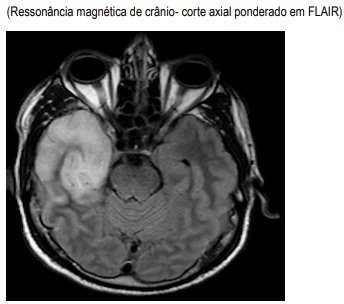
A Pleocitose com predomínio de linfócitos, aumento discreto de proteínas, glicorraquia normal (superior a dois terços da glicemia), lactato normal, culturas e pesquisa de bactérias negativas. Pesquisa positiva para HSV-1 ou HSV-2.
B Pleocitose com predomínio de linfócitos, aumento discreto de proteínas, glicorraquia reduzida (inferior a dois terços da glicemia), lactato aumentado, culturas e pesquisa de bactérias negativas. Pesquisa positiva para HSV-1 ou HSV.
C Pleocitose com predomínio de linfócitos, aumento discreto de proteínas, glicorraquia normal (superior a dois terços da glicemia), lactato normal, culturas e pesquisa de bactérias negativas. Pesquisa positiva para Citomegalovírus.
D Pleocitose com predomínio de linfócitos, aumento discreto de proteínas, glicorraquia reduzida (inferior a dois terços da glicemia), lactato aumentado, culturas e pesquisa de bactérias negativas. Pesquisa positiva para Citomegalovírus.
Questão 68 · Tratamento · Síndrome de GuillainBarré · Neurologia · 4000184377Mulher, 56a, previamente hígida, procura o Pronto Socorro com quadro de dormência e perda de força evoluindo há dois dias. Os sintomas se iniciaram nos pés e ascenderam até raiz de coxas. No momento, paciente deambulando apenas com apo io bilateral. Antecedentes pessoais: recebeu vacina antiviral há uma semana. Exame físico: bom estado geral; PA=138x87mmHg; FC=115bpm; FR=18irpm; oximetria de pulso=96% (ar ambiente); ausculta cardiopulmonar sem alterações. Neurológico: força muscular em membros inferiores- distal grau II e proximal grau III; e em membros superiores- distal grau III e proximal grau IV; reflexos osteotendinosos globalmente abolidos; reflexo cutâneo plantar em exão; paralisia facial de padrão periférico à direita e à esquerda; exame de sensibilidade e função es ncteriana preservados. Exames laboratoriais: CPK=438UI/L; sódio=136mEq/L; potássio=4,2mEq/L; cálcio iônico=1,2mmol/L. TRATAMENTO SÃO:
A Miosite pós-vacinal e pulsoterapia de corticosteroides.
B Mielite transversa pós-vacinal e imunoglobulina humana endovenosa.
C Síndrome de Guillain-Barré e pulsoterapia de corticosteroides.
D Síndrome de Guillain-Barré e imunoglobulina humana endovenosa.
Questão 69 · Inf arto Agudo do miocárdio com supra de ST IAMCSST · Cardiologia · 4000184376Homem, 67a, no início da manhã apresentou fortes dores na região central do tórax, que irradiavam para o pescoço, mandíbula e braço esquerdo, e di culdade para respirar. Foi imediatamente conduzido a uma Unidade de Emergência, chegando com sudorese acentuada e muito ansioso. Exame físico: PA=60x35mmHg; FC=120bpm; cianose de extremidades, pulsos fracos. Eletrocardiograma: sinais de extenso infarto do miocárdio anterolateral. Foram realizadas medidas iniciais de suporte de vida e indicado cateterismo cardíaco, mas antes disto evoluiu à óbito. Submetido à necropsia. A Figura mostra uma secção do coração. SOBRE A IMAGEM, É CORRETO AFIRMAR QUE:

A Há uma área de infarto do miocárdio antigo e o novo infarto é muito recente para ser identificado à histologia convencional.
B Há uma área de necrose coagulativa do miocárdio, compatível com o infarto recente.
C Existe uma hipertrofia dos cardiomiócitos decorrente de hipertensão arterial crônica.
D O infarto do miocárdio produziu redução súbita da pressão arterial, com trombose vascular e sinais de recanalização.
Questão 70 · Tabaco · Dependência de Tabaco · 4000184375Homem, 20a, procura a Unidade Básica de Saúde para orientação sobre o uso de cigarro eletrônico. Após falecimento do avô por câncer de pulmão, e sabendo dos riscos da exposição ao tabaco, ele quer saber sobre a segurança desse novo dispositivo.
A Pode ser usado com segurança em até 5mg definicotina por dia.
B Não existe tipo ou quantidade considerada segura.
C Pode ser usado com segurança em até 2mg definicotina por dia.
D As unidades sem nicotina são consideradas seguras.
Questão 71 · Diagnóstico e Classif icação das Úlceras · 4000184374Homem, 48a, retorna assintomático à Unidade Básica de Saúde. Há três meses iniciou tratamento com omeprazol, após endoscopia digestiva alta (EDA) ter evidenciado úlcera em corpo gástrico de 1cm, bordas planas e nítidas, fundo com brina, sem sangramento ativo. Pesquisa para FR=14irpm; restante sem alterações.
A Manter omeprazol até completar seis meses de tratamento.
B Repetir a EDA, independente da melhora dos sintomas.
C Repetir a EDA caso os sintomas persistam, após seis meses de tratamento.
D Suspender omeprazol e dar alta ambulatorial.
Questão 72 · Heparina não f racionada · 4000184373Homem, 32a, internado há três dias após fratura de tíbia por acidente automobilístico, apresentou quadro de dispneia súbita. Foi feito o diagnóstico de tromboembolismo pulmonar e iniciada a anticoagulação plena com heparina não fracionada. No dia seguinte, após apresentar fraqueza em dimídio direito, foi suspensa a heparina e realizada tomogra a computadorizada de crânio. A CONDUTA É:

A Prescrever vitamina K.
B Retomar a heparina não fracionada.
C Prescrever plasma fresco congelado.
D Prescrever protamina.
Questão 73 · Tratamento de manutenção da asma · Pneumologia · 4000184372Homem, 37a, procura atendimento na Unidade Básica de Saúde com queixa de tosse seca e chiado no peito. Estes episódios ocorrem de quatro a cinco vezes por semana, nos últimos três meses, não relacionados aos exercícios. Durante as crises, tem melhora com o uso de salbutamol. Antecedentes pessoais: asma, em uso de budesonida inalatória diariamente. Exame físico: T=36,4ºC; FR=16irpm; oximetria de pulso=96% (ar ambiente). Pulmões: murmúrio vesicular presente bilateralmente com sibilos expiratórios.
A Associar formoterol.
B Prescrever azitromicina por 5 dias.
C Substituir budesonida por prednisona.
D Associar tiotrópio.
Questão 74 · Endocrinologia · 4000184371Homem, 73a, retorna à consulta na Unidade Básica de Saúde referindo adinamia e ganho de peso nos últimos três meses. Antecedentes pessoais: doença arterial coronariana, hipertensão arterial e dislipidemia, em uso de losartana, carvedilol, ácido acetil salicílico, clopidogrel e atorvastatina. Exame físico: T=36,2ºC; PA=128x72mmHg; FC=54bpm; FR=10irpm; oximetria de pulso=97% (ar ambiente). Ausculta cardíaca e pulmonar normais. Re exos osteotendinosos diminuídos globalmente. TSH=25µUI/mL; T4 livre=0,2ng/dL.
A Iniciar levotiroxina 50mcg.
B Iniciar levotiroxina 25mcg.
C Repetir o exame em 60 dias.
D Repetir o exame em seis meses.
Questão 75 · Inf ectologia · 4000184370Homem, 32a, assintomático, comparece à Unidade Básica de Saúde para repetir testagem de infecções sexualmente transmissíveis após oito meses do tratamento para sí lis secundária. Naquele momento, apresentou teste não treponêmico VDRL=1:32 e recebeu penicilina benzatina 2,4 milhões UI intramuscular. Exame físico: PA=122x84mmHg; FC=86bpm; FR=14irpm. Ausculta cardíaca e pulmonar sem alterações, ausência de lesões de pele, ausência de lesão genital. Exame neurológico sem alterações. Exames laboratoriais: sorologias de HIV e hepatites B e C não reagentes, VDRL=1:32. HIPÓTESE DIAGNÓSTICA E A CONDUTA SÃO:
A Cicatriz sorológica; repetir VDRL e em caso de aumento de título, indicar retratamento.
B Reinfecção por sífilis; indicar retratamento em caso de aparecimento de lesões cutâneas e/ou genitais.
C Sífilis persistente; indicar retratamento com doxiciclina, pela suspeita de falha da penicilina benzatina.
D Reativação de sífilis; indicar retratamento com penicilina benzatina e realizar coleta de líquor.
Questão 76 · Pneumologia Intensiva · Pneumologia · 4000184369Mulher, 53a, internada para tratamento de pneumonia, evoluiu com necessidade de ventilação mecânica. Antecedentes pessoais: lúpus eritematoso sistêmico e diabetes melito. Medicamentos em uso: prednisona, ceftriaxona, azitromicina e insulina. Exame físico: peso atual=76Kg; peso predito=50Kg; T=36,9ºC; PA=132x68mmHg; FC=88bpm; oximetria de pulso=95% (FiO₂=50%); ausculta pulmonar com crepitações em base esquerda; ausculta cardíaca normal. Ventilação mecânica: modo controlado a volume; fração inspirada de oxigênio (FiO₂)=50%; volume corrente=300mL; FR=16irpm; pressão positiva expiratória nal (PEEP)=6mmHg; relação I:E=1:3. Gasometria arterial: pH=7,29; paO₂=120mmHg; paCO₂=72mmHg; HCO₃=27mmol/L; base excess (BE)=-1,5.
A Frequência respiratória.
B FiO₂.
C PEEP.
D Volume corrente.
Questão 77 · Protocolo de transf usão maciça · Cirurgia · 4000184368Homem, 21a, vítima de ferimento por projétil de arma de fogo em região toracoabdominal, é trazido ao hospital terciário por familiares. Exame físico: escala de coma de Glasgow=8; pupilas isofotorreagentes; PA=69x41mmHg; FC=142bpm; FR=24irpm; presença de orifício de entrada no 11° espaço intercostal na linha axilar anterior direita e orifício de saída no mesmo nível na região paravertebral direita. Restante sem alterações. Foram realizados: obtenção de via aérea definitiva e administração de 1.000mL de solução de Ringer com lactato aquecido. CONDUTA A SEGUIR É:
A Toracotomia de reanimação.
B Laparotomia exploradora.
C Protocolo de transfusão maciça.
D Administrar droga vasoativa.
Questão 78 · Princípios da Anestesiologia · Cirurgia · 4000184367Durante a laringoscopia na intubação orotraqueal é solicitado, para um integrante da equipe, realizar uma pressão no sentido posterior, superior e para a direita na laringe.
A Comprimir o esôfago contra a coluna.
B Auxiliar na visualização das cordas vocais.
C Determinar a classificação de Mallampati.
D Evidenciar grau de obstrução da via aérea.
Questão 79 · Choque · Cirurgia · Trauma Abdominal e Pélvico · 4000184366Homem, 19a, condutor de motocicleta, tem uma colisão frontal contra anteparo xo. É trazido pelo atendimento pré- hospitalar para Unidade de Pronto Atendimento com colar cervical e imobilizado em prancha longa. Na admissão queixa-se de dor na região de abdome inferior. Exame físico: escala de coma de Glasgow=15; pupilas isofotorreagentes; PA=94x62mmHg; FC=122bpm; FR=18irpm; oximetria de pulso=95% (ar ambiente); pescoço/tórax sem alterações; abdome/pelve: palpação dolorosa da sín se púbica com afastamento em torno de 3cm, dor à palpação e compressão laterais da pelve, presença de hematoma escrotal. Foram realizados: oferta de O2=12L/min por máscara não reinalante; punção de dois acessos venosos periféricos com cateteres calibrosos; coleta de sangue e administração de 1.000mL de solução de Ringer com lactato aquecido e estabilização da pelve com lençol. DEVE SER NA TOPOGRAFIA:
A das cristas ilíacas anterior superior.
B das regiões médias das coxas.
C da região mediana entre púbis e cicatriz umbilical.
D dos trocanteres maiores dos fêmures.
Questão 80 · Cirurgia Torácica · Cirurgia · 4000184365As imagens abaixo representam um dreno radiopaco utilizado em drenagem torácica. NA REALIZAÇÃO DE UMA DRENAGEM TORÁCICA SOB SELO D’ÁGUA EM UM PACIENTE, O POSICIONAMENTO CORRETO DO ÚLTIMO ORIFÍCIO DA EXTREMIDADE “B” É:
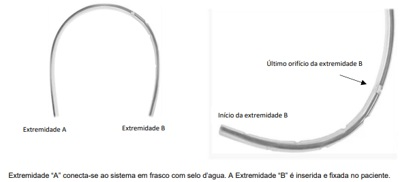
A No espaço intercostal, distante do feixe vásculo-nervoso.
B Entre as pleuras visceral e parietal.
C No subcutâneo, sem exteriorização para o ambiente.
D Entre a pleura visceral e o parênquima pulmonar.
Questão 81 · Pneumotórax Hipertensivo · Cirurgia · 4000184364Homem, vítima de acidente automobilístico, é trazido ao Pronto Socorro de referência. Na admissão, apresenta insu ciência respiratória aguda súbita. Exame físico: PA=82x54mmHg; FC=133bpm; FR=34irpm; oximetria de pulso=88% ( ar ambiente); presença de en sema subcutâneo; turgência jugular; desvio de traqueia para a esquerda e ausência de murmúrio vesicular no hemitórax direito.
A Solicitar radiograma de tórax.
B Administrar 1.000mL de Ringer com lactato aquecido.
C Solicitar tomografia computadorizada de tórax.
D Realizar punção do espaço pleural.
Questão 82 · Estadiamento anatômico · 4000184363Homem, 58a, apresenta tosse e emagrecimento de 5Kg há dois meses. Radiograma de tórax: opacidade paracardíaca direita, com apagamento do bordo direito do coração e discreto alargamento do mediastino. Biopsia por broncoscopia: carcinoma não pequenas células.
A principal direito.
B intermediário.
C do lobo inferior direito.
D do lobo médio.
Questão 83 · Fimose · Tratamento · Tratamento · 4000184362Menino, 3m, é trazido para puericultura e mãe nega queixas. O exame físico foi compatível com os diagnósticos de: mose; hidrocele à esquerda; hemiescroto direito vazio e testículo palpável no canal inguinal direito.
A Expectante quanto à fimose; expectante quanto à hidrocele; realizar orquidopexia.
B Indicar postectomia; corrigir a hidrocele; realizar orquidopexia.
C Expectante quanto à fimose; expectante quanto à hidrocele; expectante quanto à orquidopexia.
D Indicar postectomia; corrigir a hidrocele; expectante quanto à orquidopexia.
Questão 84 · Escore Meld · 4000184361O MELD (Model for End-stage Liver Disease) é um índice baseado em alguns dados clínicos do paciente adulto e é usado para definir a inscrição do paciente na la de transplante hepático. MELD SÃO:
A Bilirrubina indireta; transaminases; creatinina.
B Bilirrubina total; RNI; creatinina.
C Bilirrubina total; albumina; clearance de creatinina.
D Bilirrubina indireta; RNI; clearance de creatinina.
Questão 85 · Fases da Cicatrização · Cirurgia · 4000184360NO PROCESSO DE CICATRIZAÇÃO DAS FERIDAS, AS FASES DOS EVENTOS ORGÂNICOS OCORREM NA SEGUINTE ORDEM DIDÁTICA:
A Proliferativa (fibroplasia); reparativa (remodelação); exudativa (inflamatória).
B Reparativa (remodelação); exudativa (inflamatória); proliferativa (fibroplasia).
C Exsudativa (inflamatória); reparativa (remodelação) e proliferativa (fibroplasia).
D Exudativa (inflamatória); proliferativa (fibroplasia); reparativa (remodelação).
Questão 86 · Inf ectologia · 4000184359Homem, 32a, vítima de queda de moto em dia de chuva. Apresentou abdome agudo hemorrágico com choque refratário, sendo submetido à laparotomia exploradora com esplenectomia total. QUAIS AGENTES INFECCIOSOS ESTE PACIENTE DEVE SER IMUNIZADO?
A Pneumococo,
B Pneumococo, HPV e
C Meningococo,
D Meningococo, pneumococo e rotavírus.
Questão 87 · Estimativa da Superf ície Corpórea Queimada e Circulação · Cirurgia · 4000184358Homem, 26a, é trazido ao Pronto Socorro após queimadura na face anterior do corpo, por uso de álcool líquido em churrasqueira. Durante o atendimento inicial foi proposta reposição volêmica conforme o ATLS 10ª. edição. CONSIDERANDO A REGRA DOS 9 PARA SER UTILIZADA NA FÓRMULA DE PARKLAND, A SUPERFÍCIE CORPÓREA QUEIMADA, CONFORME A ILUSTRAÇÃO ABAIXO, É: Queimadura de segundo grau=coloração cinza sólida; queimadura de primeiro grau=listrado vertical.
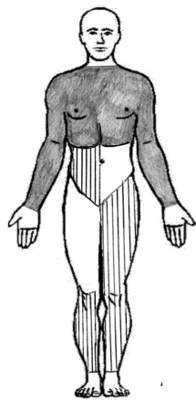
A 22,5%.
B 20,5%.
C 43%.
D 45%.
Questão 88 · Cistos Renais · Cirurgia · 4000184357Homem, 75a, assintomático, retorna para consulta médica trazendo ultrassonogra a de abdome que evidenciou um cisto de 3,2x2,8cm em rim esquerdo, sem conteúdo espesso e sem septações.
A Repetir ultrassonografia em seis meses.
B Repetir ultrassonografia em um ano.
C Orientar que não há necessidade de prosseguir a investigação.
D Solicitar tomografia computadorizada de abdome com contraste.
Questão 89 · Cirurgia · 4000184356No exame físico o sinal semiológico, quando presente, auxilia no raciocínio da hipótese diagnóstica. CULLEN, LENANDER E DE JOBERT, ESTÃO RELACIONADOS, RESPECTIVAMENTE, COM:
A Pancreatite aguda, apendicite aguda e úlcera duodenal perfurada.
B Neoplasia gástrica, pancreatite aguda e diverticulose.
C Ulcera duodenal perfurada, apendicite aguda, diverticulose.
D Pancreatite aguda, neoplasia gástrica e apendicite aguda.
Questão 90 · Síndrome do Desconf orto Respiratório Agudo SDRA · Pneumologia · 4000184355ASSINALE A VARIÁVEL E O VALOR QUE CARACTERIZAM A SÍNDROME RESPIRATÓRIA AGUDA GRAVE:
A Frequência respiratória > 30irpm.
B Pressão inspiratória máxima < -25cmH₂0.
C Relação PaO₂/FiO₂ < 300mmHg.
D PaCO₂ > 60mmHg.
Questão 91 · Isquemia Mesentérica Crônica · Cirurgia · 4000184354Homem, 72a, procura Pronto Socorro queixando-se de dor abdominal em cólica há um mês, periumbilical, com piora há uma semana, principalmente após as refeições, sem melhora com analgésicos e necessitando permanecer em posição antálgica. Antecedente pessoal: infarto agudo do miocárdio há 12 anos, diabetes melito há 22 anos, tabagismo 40 anos/maço. Exame físico: FC=108bpm; PA=162x78mmHg; abdome: plano, normotenso, ácido, sem irritação peritoneal, sem tumor palpável; membros inferiores: pulsos pediosos ausentes, pulsos tibiais posteriores presentes. DIAGNOSTICA É:
A Angina mesentérica.
B Úlcera péptica.
C Cólica biliar.
D Aneurisma de aorta.
Questão 92 · Hematologia · 4000184353Mulher, 32a, procura Pronto Socorro queixando-se de dor e inchaço em perna direita há dois dias. Ultrassonogra a com Doppler: trombose venosa profunda.
A Warfarina; R=2,5 a 3,5.
B Heparina não fracionada; RNI=2,0 a 3,0.
C Heparina de baixo peso; RNI=2,5 a 3,5.
D Heparina de baixo peso e warfarina; RNI=2,0 a 3,0.
Questão 93 · Larva migrans · Dermatologia · 4000184352Menino, 8a, é trazido para atendimento médico por apresentar lesão pruriginosa em dorso de pé há uma semana, com aumento progressivo, conforme imagem. O AGENTE ETIOLÓGICO DESTA LESÃO É:
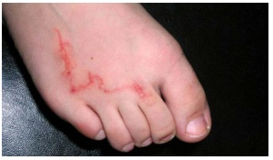
A Necator americanus.
B Ancylostoma braziliensis.
C Leishmania donovani.
D Trypanosoma cruzi.
Questão 94 · Contratura Isquêmica de Volkmann · 4000184351Adolescente, 12a, é trazido ao Pronto Socorro referindo dor em cotovelo direito após ter caído de uma árvore, há uma hora. Exame físico: corado; consciente; orientado; hidratado; fácies de dor. FC=112bpm, FR=21irpm, PA=126x82mmHg. Deformidade em cotovelo direito, doloroso à palpação, e pulsos radiais presentes. Restante sem alterações. Radiograma de cotovelo direito. UMA COMPLICAÇÃO QUE PODE OCORRER NESTA SITUAÇÃO CLÍNICA É A SÍNDROME DE COMPARTIMENTO QUE, SE NÃO CONDUZIDA PRECOCEMENTE, PODE LEVAR À:
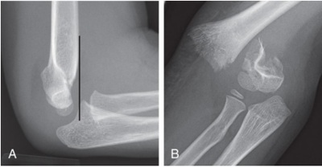
A Choque neurogênico.
B Lesão de Baumann.
C Lesão dos nervos ulnar, mediano e braquial.
D Contratura isquêmica de Volkmann.
Questão 95 · Diarreia Crônica · 4000184350Criança, 3a, em acompanhamento ambulatorial por quadro de diarreia crônica, edema e baixo ganho pondero-estatural nos últimos sete meses. Exame físico: índice de massa corporal (IMC) percentil 3; descorado; hidratado; anictérico; fígado e baço não palpáveis; edema palpebral e de membros inferiores. hemoglobina=8,0g/dL; hematócrito=25%; VCM= 63fL; HCM=26pg; leucócitos=10.250/mm³(86% plaquetas=345.000/mm³; albumina=2,1g/dL; alfa1globulina=0,9g/dL; alfa2globulina=0,7g/dL; betaglobulina= 1,1g/dL; gamaglobulina=0,8g/dL; proteinúria 24 horas=0,15g.
A Intolerância à lactose.
B Enteropatia perdedora de proteína.
C Infecção por
D Deficiência de alfa1 antitripsina.
Questão 96 · Tuberculose Latente · Tuberculose · 4000184349Menino, 15 dias de vida, é trazido para consulta de puericultura em aleitamento materno exclusivo, assintomático. Antecedente pessoal: uma dose de vacina de hepatite B. Contactante domiciliar iniciou tratamento de tuberculose pulmonar há um dia. Exame físico sem alterações, com ganho ponderal de 30g/dia em relação à alta hospitalar.
A Prescrever rifampicina oral por 3 meses e, após, indicar teste tuberculínico.
B Prescrever isoniazida oral por 3 meses e, após, indicar a vacina BCG.
C Indicar a vacina BCG.
D Indicar teste tuberculínico.
Questão 97 · Ref luxo Gastroesof ágico RGE · Pediatria · 4000184348Menina, 4m, é trazida para puericultura com história de vômitos após as mamadas desde o nascimento. Mãe refere sono agitado, irritabilidade e piora progressiva dos vômitos desde o início do quadro. Procurou serviço médico e foi orientado decúbito elevado e domperidona. Há dois meses o leite materno foi substituído por fórmula à base de aminoácidos 5 medidas fórmula em 150mL água a cada 2 horas, sem melhora. Antecedente pessoal: recém-nascido a termo, peso nascimento=3.130g. Exame físico: bom estado geral; anictérica; corada; peso=4,380Kg; fontanela plana e normotensa; exame neurológico normal; restante sem alterações.
A Substituir domperidona por omeprazol.
B Indicar fundoplicatura total.
C Solicitar radiograma contrastado de esôfago-estômago-duodeno.
D Substituir a fórmula à base de aminoácidos por hidrolisado proteico.
Questão 98 · Diagnóstico · Pediatria · 4000184347Menino, 9a, previamente hígido, é trazido ao Pronto Atendimento com história de múltiplas lesões arroxeadas pelo corpo, sem prurido. Há dois dias iniciou quadro de dor abdominal intensa, difusa, com melhora parcial com uso de dipirona oral. Nega febre, vômitos, diarreia ou alterações urinárias. Exame físico: bom estado geral; corado; afebril; anictérico; hidratado; eupneico; pele: múltiplas lesões equimóticas indolores, sem hiperemia ou calor, em nádegas e membros inferiores; abdome indolor, sem visceromegalias ou massas; exame neurológico normal. O DIAGNÓSTICO É:
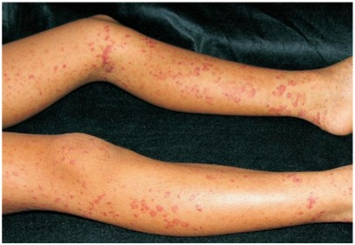
A Púrpura trombocitopênica idiopática.
B Meningococcemia.
C Púrpura
D Vasculite por IgA.
Questão 99 · Dermatologia · Molusco contagioso · 4000184346Menina, 2a, é trazida para consulta de rotina, com lesões de pele há dois meses. Situação vacinal atualizada. Exame físico: bom estado geral; corada; hidratada; afebril; anictérica; pele Restante do exame sem alterações.
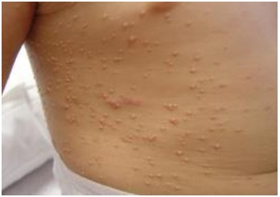
A Herpes simplex.
B Poxvírus.
C Papiloma vírus humano.
D Vírus Varicella-zoster.
Questão 100 · Mastoidite · 4000184345Menina, 15m, é trazida para avaliação médica com história de coriza e dor no ouvido direito há oito dias. Refere febre há três dias, prostração, inapetência, dor e aumento de volume retroauricular. Exame físico: bom estado geral; T=38,2oC; FR=42irpm; FC=137bpm. Cabeça: O TRATAMENTO É PRESCREVER:
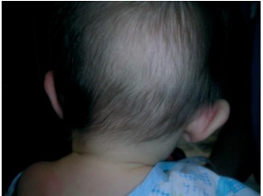
A Cefazolina e amicacina intravenosa.
B Ciprofloxacina tópica.
C Azitromicina via oral.
D Oxacilina e ceftriaxona intravenosa.
Questão 101 · Corpo EstranhoEngasgo · 4000184344Menina, 10m, é trazida à Emergência por ter apresentado quadro súbito de acesso de tosse e cansaço. Nega febre e coriza. Exame físico: bom estado geral; T=36,5ºC; FR=62irmp; FC=110bpm; pulsos cheios; perfusão periférica=2 segundos; oximetria de pulso= 91% (ar ambiente); batimento de asa nasal; retração intercostal; pulmões: murmúrio vesicular presente, com roncos disseminados bilateralmente; coração: bulhas rítmicas normofonéticas sem sopros. DIAGNÓSTICA É:
A Aspiração de corpo estranho.
B Bronquiolite viral aguda.
C Laringite aguda.
D Pneumotórax espontâneo.
Questão 102 · Manejo da Via Aérea · 4000184343Na condução da parada cardiorrespiratória em assistolia com via aérea definitiva de um lactente de três meses, FREQUÊNCIA DE COMPRESSÕES TORÁCICAS E DE VENTILAÇÃO É, RESPECTIVAMENTE:
A 100-120 compressões/min assíncronas e 1 ventilação a cada 2-3 segundos.
B 100-110 compressões/min síncronas para cada ventilação.
C 110-120 compressões/min assíncronas e 1 ventilação a cada 6 segundos.
D 100-120 compressões/min síncronas para cada 4 ventilações.
Questão 103 · Sepse neonatal · 4000184342Recém-nascido a termo, lho de mãe colonizada por doses de penicilina cristalina antes do parto vaginal, sendo a última há três horas. Apgar 9/10, exame físico sem alterações. A CONDUTA PARA O RECÉM-NASCIDO É:
A Coletar hemograma, proteína C reativa e hemocultura; iniciar antibioticoterapia.
B Coletar hemograma, proteína C reativa; aguardar exames para definir conduta.
C Realizar exame físico seriado; sem coleta de exames ou tratamento.
D Coletar hemocultura; iniciar antibioticoterapia.
Questão 104 · Causas · 4000184341Recém-nascido a termo com 3.450g apresenta-se hipotônico e com sucção débil com 12 horas de vida. Realizada dosagem de glicemia plasmática=22mg/dL. Antecedente gestacional: mãe com crise asmática e uso de terbutalina próximo ao parto.
A Hiperinsulinismo.
B Nesidioblastose.
C Inibição da glicólise.
D Bloqueio da glicogenólise.
Questão 105 · Inf ectologia · 4000184340Menino, 1a, é trazido à Emergência com história de choro intenso, agitação, sudorese fria e seis episódios de vômito há cerca de uma hora. Exame físico: regular estado geral; sonolento; choroso; T=36,8°C; FC=175bpm; FR=32irpm; pulsos cheios, enchimento capilar=2seg. Levado à Sala de Urgência. Eletrocardiograma: ritmo sinusal, onda T invertida em algumas derivações e presença de onda U. Glicemia capilar=204mg/dL.
A Síndrome do QT longo.
B Acidente escorpiônico.
C Sepse criptogênica.
D Cetoacidose diabética.
Questão 106 · Reanimação neonatal em maiores de 34 semanas · 4000184339Recém-nascido, 40 semanas de gestação, gravidez sem intercorrências e parto cesárea por sofrimento fetal agudo com presença de líquido amniótico meconial. Foi recebido em campos aquecidos, posicionado em decúbito dorsal sob fonte de calor radiante, trocados os campos úmidos e asseguradas as vias aéreas pérvias. Encontra-se hipotônico, com movimentos respiratórios irregulares e FC=60bpm.
A Intubação traqueal, administração de oxigênio a 100%, seguida de aspiração do conteúdo traqueal.
B Intubação traqueal e ventilação com pressão positiva com oxigênio a 21%.
C Compressão torácica coordenada com a ventilação com pressão positiva.
D Ventilação com pressão positiva por máscara com oxigênio a 21%.
Questão 107 · Hipotireoidismo Congênito · 4000184338Menino, 23 dias de vida, foi convocado para consulta por apresentar TSH=25mUI/L em teste de triagem neonatal coletado em papel- ltro no quarto dia de vida. Mãe nega queixas. Está em aleitamento materno exclusivo com ganho ponderal de 28g/dia e o exame físico é normal. Antecedentes pessoais: gravidez e parto sem intercorrências (Capurro=39 semanas; peso ao nascimento=3.125g).
A Sugere hipotireoidismo subclínico; deve-se realizar dosagem sérica de T4L e TSH em oito semanas ou antes, se apresentar sintomas.
B Sugere aumento fisiológico de TSH porque a coleta foi realizada no quarto dia de vida; não é necessária investigação.
C Sugere hipotireoidismo; deve-se realizar dosagem sérica imediata de T4L e TSH.
D Sugere hipertireoidismo; deve-se realizar dosagem sérica imediata de T3L, T4L e TSH.
Questão 108 · Pneumonia af ebril do lactente · Pediatria · Agentes etiológicos · 4000184337Menina, 3m, é internada em enfermaria com história de tosse seca, recusa das mamadas e cansaço há dois dias. Nega febre. Antecedentes pessoais: parto vaginal domiciliar a termo, com peso adequado; conjuntivite purulenta aos 15 dias de vida, em acompanhamento com oftalmologista. Exame físico: bom estado geral; corada; hidratada; T=36,2oC; FR=71irpm; FC=152bpm; pulsos cheios; enchimento capilar=2seg; pulmões: murmúrio vesicular presente, simétrico, com estertores subcrepitantes bilateralmente, tempo expiratório normal, com presença de retração de fúrcula, tiragem intercostal e subcostal.
A Streptococcus pneumoniae.
B Staphylococcus aureus.
C Chlamydia trachomatis.
D Streptococcus agalactiae.
Questão 109 · Tratamento · 4000184336Mulher, 41a, nuligesta, acompanhada por dismenorreia, que a incapacita de realizar atividades diárias, e dispareunia de profundidade há três anos. Tem ciclos menstruais regulares e usa pessoal: quadrantectomia por carcinoma fundo de saco posterior sugestiva de endometriose.
A Prescrever acetato de medroxiprogesterona trimestral.
B Prescrever anticoncepcional oral combinado contínuo.
C Indicar sistema intrauterino liberador de levonorgestrel.
D Indicar tratamento cirúrgico.
Questão 110 · Obstetrícia · Hepatites na gestação · 4000184335Mulher, 32a, gestante de 29 semanas, assintomática, foi encaminhada ao Pré-natal Especializado por apresentar os seguintes plaquetas=210.000/mm³; HBe=negativo; anti-HBc=positivo.
A Solicitar carga viral do vírus da hepatite B, para definir tratamento materno; indicar vacina e imunoglobulina contra hepatite B para o recém-nascido.
B Iniciar tratamento materno apenas no puerpério; indicar vacina e imunoglobulina contra hepatite B para o recém- nascido.
C Realizar tratamento materno com tenofovir; indicar vacina e imunoglobulina contra hepatite B para o recém- nascido.
D Realizar controle periódico de enzimas hepáticas maternas; indicar vacina contra hepatite B para o recém- nascido.
Questão 111 · Diabetes na gestação DMG · Obstetrícia · 4000184334Mulher, 30a, G1P0A0, idade gestacional de 26 semanas, é encaminhada com a seguinte curva glicêmica gestacional (CGG): Jejum=89mg/dL; 1h=182mg/dL; 2h=154mg/dL. Antecedentes: obesidade grau II, pai e avô diabéticos. O TRATAMENTO SÃO:
A Euglicemia; orientar dieta, atividade física e repetir CGG com 28 semanas.
B Diabetes gestacional; orientar dieta, atividade física e controle glicêmico.
C Diabetes melito tipo 2; orientar dieta, atividade física e introduzir insulina.
D Intolerância à glicose; orientar dieta e atividade física, não sendo necessário repetir o exame.
Questão 112 · Rotura prematura de membranas ovulares RPM · Obstetrícia · 4000184333Mulher, 22a, G2P1A0, idade gestacional de 30 semanas, sem comorbidades, comparece ao Pronto Atendimento referindo dor em baixo ventre e sangramento vaginal discreto. Boa movimentação fetal. Exame físico: PA=102x62mmHg; FC=96bpm; altura uterina=28cm; BCF=152bpm; dinâmica uterina=ausente; especular=ausência de líquido ou sangue em vagina ou colo uterino; toque vaginal=colo dilatado 2cm, grosso, posterior. Após 30 minutos do exame, apresentou perda de líquido amniótico por via vaginal em grande quantidade. MEDIDAS INDICADAS NESTE MOMENTO SÃO:
A Cardiotocografia, antibiótico de largo espectro para corioamnionite, sulfato de magnésio e indução do parto.
B Triagem infecciosa, ultrassonografia com Doppler, sulfato de magnésio e parto cesárea.
C Triagem infeciosa, corticoterapia, antibioticoprofilaxia para estreptococo do grupo B, sulfato de magnésio e tocolítico.
D Cardiotocografia, triagem infeciosa, corticoterapia, antibioticoprofilaxia para estreptococo do grupo B.
Questão 113 · Planejamento f amiliar · 4000184332Mulher, 25a, vem para avaliação de planejamento familiar após encaminhamento pela reumatologia. Apresenta ciclos menstruais com uxo aumentado e coágulos, com duração de 10 dias, nos últimos seis meses. Antecedentes: G0P0, menarca aos 15 anos, vida sexual ativa, parceiro único; tem diagnóstico de lúpus eritematoso sistêmico há três anos, em uso regular de hidroxicloroquina e metotrexato. hemoglobina=9g/dL, hematócrito=30%, leucócitos=2.000/mm³, plaquetas=60.000/mm³. Ultrassonografia pélvica: sem alterações em útero e ovários.
A Dispositivo intrauterino de cobre.
B Sistema intrauterino liberador de levonorgestrel.
C Anticoncepcional oral combinado com 30µg de levonorgestrel.
D Anticoncepcional oral combinado com 15µg de levonorgestrel.
Questão 114 · Endocrinologia · 4000184331Mulher, 24a, nuligesta, queixa-se de secreção leitosa por ambas as mamas, há 18 meses. Refere ciclos menstruais longos, com atrasos de até 30 dias. Exame físico: IMC=22,2Kg/m²; mamas: expressão positiva de secreção láctea bilateralmente. Restante do exame físico normal. Prolactina=91ng/mL; TSH=2,5µUI/mL. Ressonância nuclear magnética cerebral: nódulo hipofisário de 6mm. A
A Indicar tratamento cirúrgico, pois se trata de um tumor hipofisário e os agonistas dopaminérgicos não reduzem o volume do tumor.
B Não utilizar contraceptivos hormonais combinados, pois o estrogênio vai aumentar a prolactina e o tumor.
C Indicar tratamento com agonistas dopaminérgicos, para melhora do quadro clínico, da alteração hormonal e eventual redução do tumor.
D Manter estadiamento de imagem anual. Por ser tumor pequeno, não há indicação de tratamento no momento.
Questão 115 · Exames laboratoriais · Obstetrícia · 4000184330Mulher, 18a, G2P0A1, idade gestacional de 21 semanas, sem queixas ou alterações ao exame físico. Exames laboratoriais de rotina normal; urocultura=negativa. Sorologias: sí lis=negativa; toxoplasmose=IgG positivo e IgM negativo; HIV=negativa; hepatite C=negativa; Hepatite B=AntiHBs positivo, HBsAg e antiHBc negativos. Refere que desde a menarca apresenta uxo menstrual intenso e com duração de sete dias.
A Os exames sugerem anemia na gestação; investigar com eletroforese de hemoglobina.
B Os exames estão normais; orientar dieta e prescrever 40mg de ferro elementar ao dia, em uso contínuo.
C Trata-se de anemia ferropriva; prescrever 200mg de ferro elementar ao dia, por três meses.
D Trata-se de traço talassêmico; prescrever 40mg de ferro elementar e 5mg de ácido fólico ao dia, por três meses.
Questão 116 · Distúrbios hipertensivos na gestação DHEG · Obstetrícia · 4000184329Mulher, 35a, G3P2A0, idade gestacional de 37 semanas, refere que há dois dias vem apresentando edema de membros inferiores, dor de estômago e alguns episódios de cefaleia, principalmente nucal. Antecedentes: hipertensão arterial há 10 anos, em uso regular de metildopa 750mg/dia. Exame físico: PA=152x92mmHg; FC=103bpm; altura uterina=32cm; dinâmica uterina=ausente; movimentos fetais=presentes; BCF=148bpm; edema em membros inferiores= 2+/4+. DIAGNÓSTICA E A CONDUTA SÃO:
A Pré-eclâmpsia; solicitar hemograma, creatinina, proteinúria e enzimas hepáticas, realizar cardiotocografia e indicar cesárea.
B Hipertensão arterial crônica não controlada; ajustar anti-hipertensivo, acompanhar em ambulatório de pré-natal e indicar parto com 38 semanas.
C Hipertensão arterial crônica com pré-eclâmpsia sobreposta; solicitar hemograma, creatinina, proteinúria e enzimas hepáticas, realizar cardiotocografia e avaliar indução de parto.
D Hipertensão arterial crônica controlada e enxaqueca; prescrever analgésico, acompanhar em ambulatório de pré- natal e indicar parto com 39 semanas.
Questão 117 · Cardiotocograf ia CTB · Obstetrícia · 4000184328Mulher, 37a, G4P3C0, sem comorbidades, com idade gestacional de 40 semanas e 4 dias, internada em Centro Obstétrico, em fase ativa de trabalho de parto (colo no, 9cm, cefálico em plano -1 de De Lee, bolsa rota com líquido com mecônio fluido), apresenta a seguinte cardiotocografia: A INTERPRETAÇÃO DA CARDIOTOCOGRAFIA E A CONDUTA OBSTÉTRICA NESTE MOMENTO SÃO:
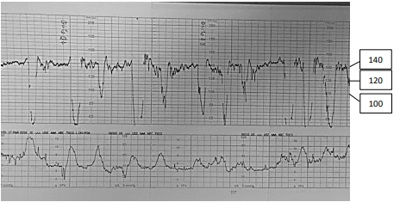
A Variabilidade normal com desacelerações precoces; manter assistência ao parto e cardiotocografia contínua.
B Ausência de variabilidade com desacelerações tardias; indicar cesárea imediata.
C Variabilidade diminuída com desacelerações variáveis; colocar em posição ginecológica e reduzir o colo uterino para parto vaginal imediato.
D Variabilidade normal com desacelerações variáveis; corrigir taquissistolia e manter cardiotocografia contínua.
Questão 118 · Diagnóstico e Exames Complementares · 4000184327Mulher, 52a, na menopausa há dois anos, em uso de terapia hormonal. Sem comorbidades. Antecedentes familiares negativos.
A Dosagem de hormônios sexuais, mamografia e ultrassonografia pélvica.
B Dosagem de hormônios sexuais, mamografia e cintilografia óssea.
C Dosagem de lipoproteínas e frações, glicemia e mamografia.
D Dosagem de lipoproteínas e frações, glicemia e ultrassonografia pélvica.
Questão 119 · Ginecologia · Farmacológicos · 4000184326Mulher, 70a, vem ao serviço com queixa de perda urinária durante orgasmo na relação sexual, há dois anos. Iniciou tratamento para perda urinária, mas interrompeu a medicação após três meses, por apresentar piora dos sintomas de demência. Antecedentes pessoais: G3C3, casada, com vida sexual ativa, menopausa aos 50 anos, sem terapia hormonal; demência leve em tratamento. Exame ginecológico: ausência de prolapsos, manobra de Valsalva negativa, sem outras alterações.
A Síndrome da bexiga hiperativa e oxibutinina.
B Incontinência urinária de esforço e oxibutinina.
C Síndrome da bexiga hiperativa e mirabegrona.
D Incontinência urinária de esforço e mirabegrona.
Questão 120 · Interpretação e conduta f rente as atipias citológicas · 4000184325Mulher, 47a, G2P2, retorna à Unidade Básica de Saúde para resultado de colpocitologia oncológica, coletada há um mês. Resultado: atipia de células glandulares sem outras especi cações (ACG-SOE). Nega alteração de exame anteriores. A ORIENTAÇÃO É:
A O resultado é anormal; encaminhar para exame de colposcopia e biópsia.
B O resultado é normal; deverá retornar para coleta de novo exame em três anos.
C O resultado é anormal e indica infecção por HPV; encaminhar para tratamento com cirurgia de alta frequência.
D O resultado é anormal, podendo estar associado à infecção por HPV ou processo inflamatório; retornar para coleta de novo exame em 12 meses.
Questão 121 · Exames complementares · Quadro clínico · 4000184324Mulher, 56a, comparece à Unidade Básica de Saúde com queixa de aparecimento de nódulo mamário à direita, indolor, há dois meses. Exame físico: mamas simétricas, sem abaulamentos ou retrações; alteração de textura da pele com hiperemia e edema em quadrante superior direito (QSD) de mama direita (D). Palpa-se nódulo endurecido e mal delimitado de 2cm em QSD de mama D, axila D com linfonodo palpável de 1cm endurecido e fossas supraclaviculares livres. INDICAR:
A Mamografia, para rastreamento.
B Ultrassonografia de mamas, para avalição de axilas e fossas supraclaviculares.
C Ressonância magnética de mamas, para avaliação de axilas e pele.
D Mamografia, para orientação do diagnóstico.
Questão 122 · Diretrizes para o rastreamento · 4000184323Mulher, 66a, procura a Unidade Básica de Saúde para rotina de prevenção de câncer de colo uterino. Refere coleta de exames com intervalos trianuais desde os 25 anos, sem alterações. Último exame há um ano, normal. Sem queixas e exame físico normal.
A Interromper rastreamento de câncer de colo uterino.
B Coletar exame de colpocitologia oncológica e retorno para resultado. Se exame normal, interromper o rastreamento.
C Retornar em dois anos para coleta exame de colpocitologia oncológica. Se exame normal, interromper o rastreamento.
D Repetir colpocitologia oncótica em dois anos e solicitar ultrassonografia pélvica.
Questão 123 · HIV na gestação · Obstetrícia · 4000184322Mulher, 29a, G1P0A0, 36 semanas de gestação, vem à consulta pré-natal e deseja parto normal. Exame físico e obstétrico normais para a idade gestacional, feto cefálico, com boa vitalidade. Antecedentes pessoais: HIV diagnosticado na décima semana de gestação, em uso regular de TARV potente. Carga viral realizada na 18ª e 35ª semanas de gestação: indetectável. Demais exames laboratoriais e ultrassonográ cos normais. ASSINALE A ALTERNATIVA CORRETA SOBRE ESTE PLANO DE PARTO:
A Via de parto obstétrica, preferencialmente vaginal; rotura artificial de membranas; evitar episiotomia; indicado AZT intravenoso durante todo o trabalho de parto.
B Via de parto obstétrica, preferencialmente vaginal; rotura espontânea de membranas; evitar episiotomia; sem necessidade de AZT intravenoso.
C Cesárea eletiva às 38 semanas; extração de feto empelicado; sem necessidade de AZT intravenoso.
D Cesárea eletiva às 38 semanas; extração de feto empelicado; indicado AZT intravenoso três horas antes do parto.
Revisar: possível letra faltando em enunciado
Questão 124 · Neoplasia intraepitelial vulvar NIV · 4000184321Mulher, 58a, com quadro de prurido vulvar crônico há 10 anos, comparece em consulta de retorno para avaliação de resultado de biopsia de lesão vulvar, cujo diagnóstico foi neoplasia intraepitelial diferenciada. Exame ginecológico: ( 11 , anexo. Área biopsiada destacada).

A Líquen escleroso da vulva.
B Papilomavírus humano tipos 6 e 11.
C Papilomavírus humano tipos 16 e 18.
D Doença de Paget invasiva.
Questão 125 · Medicina Preventiva · 4000184320Estima-se que as lesões de Koplik estejam presentes em 60% das pessoas que estão incubando o sarampo. Alguns autores consideram que elas constituem um sinal patognomônico desta doença. O DIAGNÓSTICO DE SARAMPO, PODE-SE AFIRMAR QUE:
A A especificidade é elevada.
B O valor preditivo positivo é 60%.
C É falso positivo em 40% dos casos.
D O valor preditivo negativo é 40%.
Questão 126 · Audiologia · 4000184319Perda Auditiva induzida por Ruído PAIR ou Perda Auditiva induzida por níveis de Pressão Sonora Elevados PAINPSE EM RELAÇÃO À PERDA AUDITIVA INDUZIDA POR RUÍDO, É CORRETO AFIRMAR QUE É:
A Do tipo misto, acometendo a orelha mais exposta, e irreversível.
B Condutiva, unilateral e reversível quando cessada a exposição.
C Do tipo misto, bilateral e reversível quando cessada a exposição.
D Neurossensorial, geralmente bilateral, irreversível e progressiva.
Questão 127 · Medicina Preventiva · 4000184318Um levantamento feito em uma amostra aleatória de estudantes dos cursos de graduação da Unicamp, para estudar o Índice de Massa Corporal (IMC) nesse grupo, identi cou média=21Kg/m² com desvio-padrão=3Kg/m² e erro- padrão=0,5Kg/m², IMC NESSA POPULAÇÃO ESTÁ ENTRE:
A 15,12 e 26,88.
B 18,00 e 24,00.
C 20,02 e 21,98.
D 20,50 e 22,15.
Questão 128 · Medicina Preventiva · 4000184317A figura a seguir representa a curva ROC que compara o desempenho de dois métodos diagnósticos: A e B. AO ANALISAR ESSA FIGURA, PODE-SE AFIRMAR QUE:
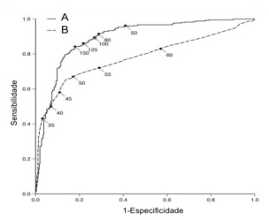
A O método B é o melhor, pois a ascensão da sua curva tem o término mais agudo.
B O método A é o melhor, pois as suas medidas estão mais próximas entre si.
C O método A é o melhor, pois apresenta a maior área sob a curva.
D Os dois métodos têm valor prognóstico positivo semelhante.
Questão 129 · Medicina Preventiva · 4000184316O número básico de reprodução R0 (R zero) foi muito estudado durante a pandemia de COVID-19. A INFORMAÇÃO DADA POR ESSE CONCEITO É:
A O número de pessoas que são contaminadas por um indivíduo, depois que ocorre uma estabilização no número de pessoas contaminadas.
B O número de pessoas que são potencialmente contaminadas por um patógeno, após o início da vacinação.
C O número mais alto de contaminação, que corresponde ao fim da fase de ascensão da curva epidêmica.
D O número de pessoas que são contaminadas por um indivíduo infectado pelo patógeno, em um ambiente em que ninguém adquiriu imunidade.
Questão 130 · Medicina Preventiva · 4000184315Homem, 55a, procura o Pronto Socorro por dor torácica em aperto, de forte intensidade. Antecedentes: hipertensão arterial e obesidade. Com a hipótese diagnóstica de infarto agudo do miocárdio (IAM), são solicitados exames complementares para confirmar ou afastar o diagnóstico. DIAGNÓSTICO, A PRINCIPAL CARACTERÍSTICA DE VALIDAÇÃO DESTES EXAMES É QUE APRESENTEM:
A Sensibilidade próxima a 100%, para evitar deixar de diagnosticar pacientes com IAM.
B Sensibilidade próxima a 100%, porque assim você vai evitar diagnosticar erradamente como infartados os pacientes sem IAM.
C Especificidade próxima a 100%, para evitar deixar de diagnosticar pacientes com IAM.
D Especificidade próxima a 100%, porque assim você vai evitar diagnosticar erradamente como infartados os pacientes sem IAM.
Questão 131 · Medicina Preventiva · 4000184314Schuch depressão. Os resultados foram sumarizados em uma metanálise que utilizou como medida o com intervalo de confiança de 95%=0,79 a 0,88, representados na figura abaixo: O RESULTADO APONTADO ACIMA PERMITE AFIRMAR QUE:
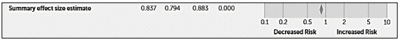
A A probabilidade de uma pessoa que faz atividade física apresentar depressão é 0,83 vezes comparada à probabilidade de quem não pratica atividade física.
B A chance de uma pessoa que faz atividade física apresentar depressão é 0,83 vezes comparada à chance de quem não pratica atividade física.
C A chance de uma pessoa evoluir com depressão é de 0,83, sendo de 0,79 no grupo que faz atividade física e de 0,88 no grupo de não faz atividade física.
D Realizar atividade física não apresentou redução significativa na associação com aumento na incidência de depressão.
Questão 132 · Intoxicações Exógenas · 4000184313Homem, 35a, procura Unidade Básica de Saúde com queixa de tontura, dor de cabec diariamente na horta perto da sua casa. Colega de trabalho apresenta sintomas semelhantes.
A Realizar notificação de intoxicação crônica por hidrocarboneto e afastar do trabalho.
B Receitar sintomáticos, afastar o paciente e encaminhar ao neurologista.
C Solicitar dosagem de eletrólitos, prescrever hidratação endovenosa e medidas para tratamento de insolação.
D Solicitar exames complementares, afastar o paciente e investigar condições de trabalho e produtos usados.
Questão 133 · Medicina Preventiva · 4000184312Homem, 52a, comparece a consulta ambutorial com diagnóstico de adenocarcinoma de pâncreas sem proposta cirúrgica. Antecedentes: diabetes melito, amaurose bilateral. ESSE PACIENTE, É CORRETO AFIRMAR QUE:
A Deve ser iniciada na presença de falência multiorgânica.
B Não deve ser introduzida de forma precoce, para não prejudicar a esfera psicossocial.
C Pode promover o alívio da dor e de outros sintomas.
D Não apresenta benefícios diante do tipo de neoplasia avançada e das comorbidades.
Questão 134 · Outros tumores ósseos · 4000184311Adolescente, 15a, procura médico de família muito preocupada com aumento de volume localizado no terço proximal da região tibial direita há cerca de quatro anos. Nega dor no local e limitação de atividades físicas. Traz exames que confirmam o diagnóstico de osteocondroma.
A Encaminhar para ressecção do tumor, pelo risco elevado de degeneração sarcomatosa para condrossarcoma.
B Realizar acompanhamento clínico e radiológico, sem necessidade de ressecção.
C Solicitar cintilografia óssea, para diferenciar entre tumor ósseo benigno e maligno.
D Encaminhar para radioterapia, pelo risco elevado de degeneração sarcomatosa para condrossarcoma.
Questão 135 · Medicina Preventiva · 4000184310Os sistemas nacionais de saúde obedecem a diferentes lógicas, dependendo de contextos sociais, econômicos e políticos de cada país.
A É do tipo seguro social.
B Mudou do tipo seguridade social para seguro social a partir da Constituição de 1988.
C É do tipo seguridade social.
D O tipo, seguridade ou seguro social, varia de acordo com a região do país.
Questão 136 · Medicina Preventiva · 4000184309Para algumas condições de saúde, a atenção primária oportuna e de boa qualidade pode evitar a hospitalização ou reduzir sua frequência.
A Não se aplica a condições ou doenças agudas.
B Avalia a resolubilidade e qualidade da atenção primária.
C Avalia o acesso à atenção hospitalar.
D Avalia o funcionamento da rede de atenção à saúde.
Questão 137 · Tratamento da Hipertensão arterial · 4000184308Homem, 88a, assintomático, comparece à consulta em Unidade Básica de Saúde para reavaliação clínica com resultados de exames. Antecedentes: hipertensão arterial, intolerância à glicose, doença arterial periférica e osteoartrite de quadril. Medicações em uso: hidroclorotiazida 25mg/dia; losartana 50mg/dia; metformina 850mg2x/dia; carbonato de cálcio 1g/dia; paracetamol 2g/dia e sulfato de glucosamina 1,5mg/dia. Exame físico: bom estado geral, PA=136x82mmHg, FC=80bpm. glicemia jejum=108mg/dL, creatinina=1,4mg/dL, ácido úrico=8,2mg/dL, hemoglobina glicada=7,6%.
A Prescrever estatina e estimular caminhada.
B Substituir losartana por beta bloqueador.
C Prescrever ácidos graxos ômega-3.
D Suspender hidroclorotiazida.
Questão 138 · Medicina Preventiva · 4000184307Homem, 82a, internado para tratamento de insu ciência cardíaca descompensada, está em programação de alta hospitalar. Antecedentes: hipertensão arterial, em uso de losartana 25mg/dia, carvedilol 25mg/dia e furosemida 40mg/dia. Exame físico: ausência de sinais de sobrecarga volêmica. Sua lha o acompanha e auxilia nas atividades diárias. IMPORTANTE PARA A ADEQUADA TRANSIÇÃO DE CUIDADOS DESTE PACIENTE É:
A Comunicação direta com o médico da atenção primária.
B Planejamento da alta hospitalar pelo médico do hospital.
C Ajuste medicamentoso e instrução da filha.
D Agendamento de retorno para avaliação laboratorial.
Questão 139 · Medicina Preventiva · 4000184306O modelo preventivista, baseado na concepção da história natural da doença, considera que existem três formas hierarquizadas de prevenção.
A A vacinação é a principal medida de proteção específica empregada na prevenção secundária.
B Tanto o diagnóstico precoce como o tratamento oportuno fazem parte da prevenção secundária.
C O tratamento adequado e integral é a principal estratégia de prevenção terciária.
D A prevenção primária tem início imediatamente após o período pré-patogênico.
Questão 140 · Medicina Preventiva · 4000184305O consentimento livre e esclarecido compõe um dos fundamentos éticos para a manifestação autônoma dos pacientes em relação aos procedimentos e intervenções em saúde. O SEGUINTE CRITÉRIO: Respostas: 1 12 23 34 45 56 67 78 89 100 111 122 133
A Compreender as informações relevantes sobre seu problema de saúde e alternativas de abordagens disponíveis, incluindo riscos e benefícios potenciais.
B Demonstrar ser capaz de repetir adequadamente as informações fornecidas, assim como as diferentes abordagens disponíveis.
C Compartilhar as informações que lhe foram prestadas com seu familiar ou representante legal.
D Ser capaz de opinar mesmo que seu raciocínio lógico, necessário para o processo de tomada de decisão, esteja comprometido.